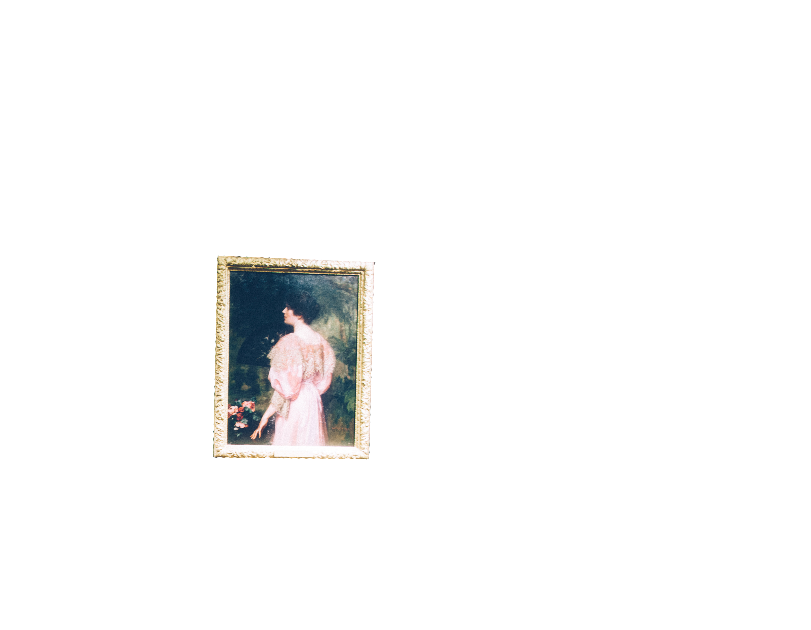
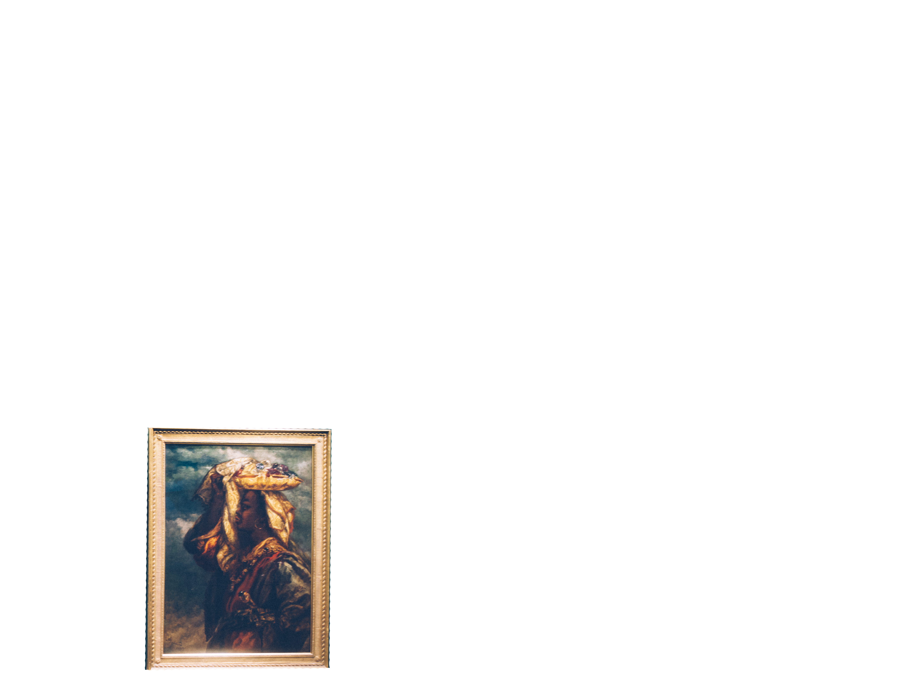
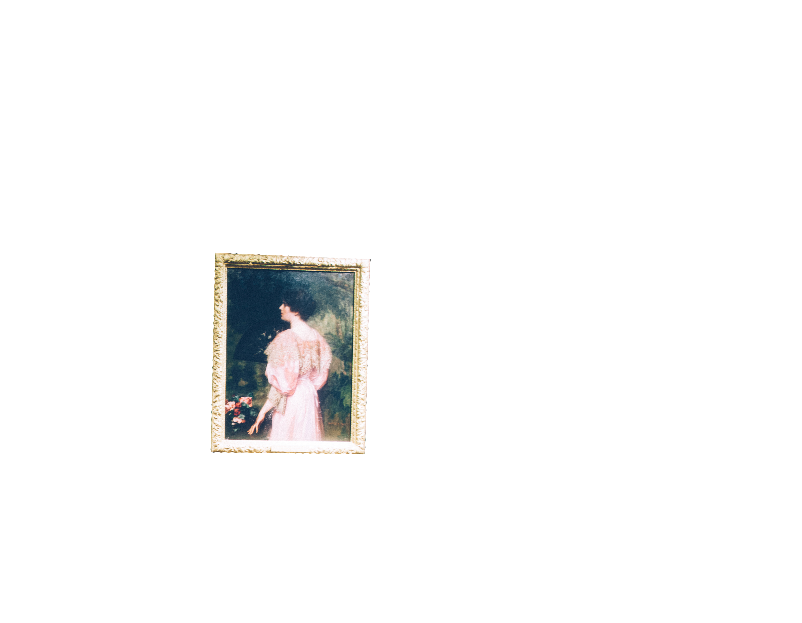
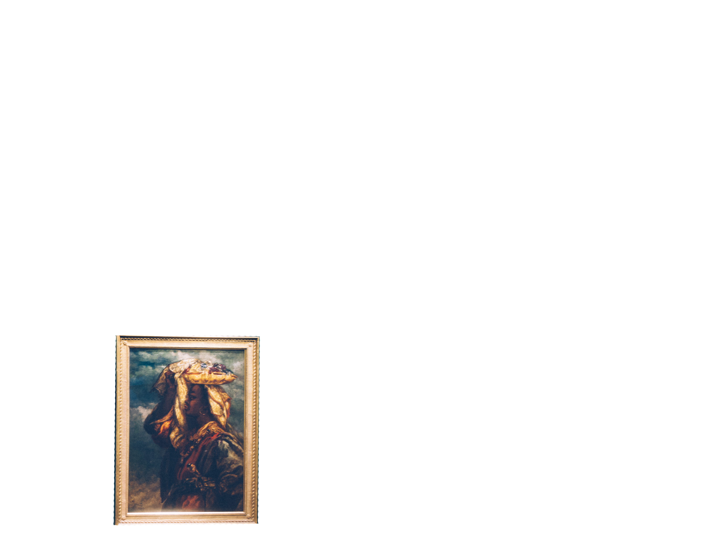

how it works
CAPTURE
Make static images move and smile
Capture static art pieces with your mobile camera and watch it come alive with Arteponse. Using Parallax 2.5D effect to make images move and smile, giving you a different experience when looking at art. By making static images move we hope you can have a unique connection and let you experience a different way of looking at pieces from the past, present, and the future.